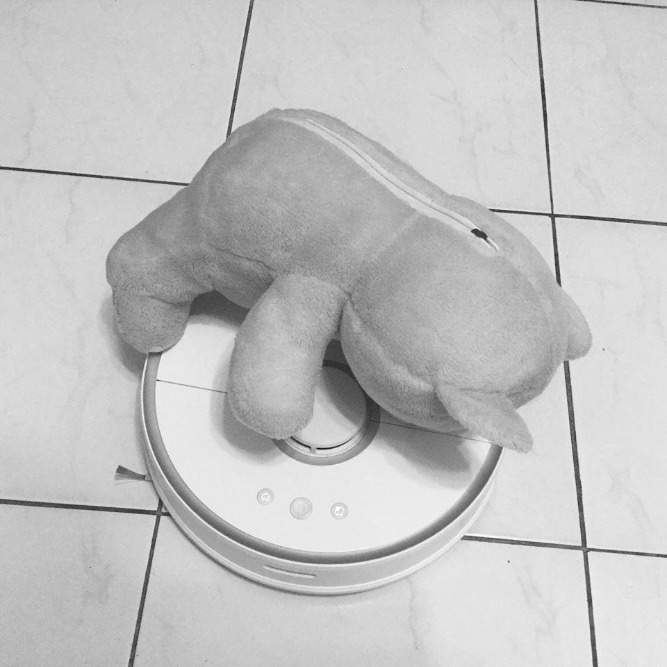

泡泡
 核坐在泡泡裡，一個巨大無比的泡泡，飄過城市，飄過田野，地上不時有小孩指著他，驚聲呼喊。
核與泡泡飄啊飄，飄洋過海來到泥的國家。
核在匆忙的城市腳步聲中尋找泥的身影，這個城市與台北似乎沒有二致，忙碌、嘈雜、要在空中用力抓好幾下，才能抓到一點蜘蛛絲般的快樂。
城市裡沒有孩子，沒有人會抬頭看看自己頭上的這片天空，所以也沒有人發現坐在泡泡裡的核。
但核相信泥會發現。
核與泡泡飄了三天三夜，始終沒找到泥。
如果泥還如同十年前他們在一起的那些時候一樣，只要在戶外，兩人總記得抬頭看看天空，看看廣闊的宇宙，期待有什麼會進入他們的視線裡。
但核找不到泥，也許是因為泥已經不再看天空了，所以核也找不到那個記憶中的泥。
核躺在泡泡裡，流出來的眼淚融進泡泡的薄膜裡，泡泡越來越重、越來越重，在飄回台北時，已經重得落在地上了。
一個小孩跑來戳泡泡，怎麼樣都弄不破。
小孩問核：「哥哥，為什麼你的泡泡不會破？」
核說：「因為這是我的牢籠啊。」